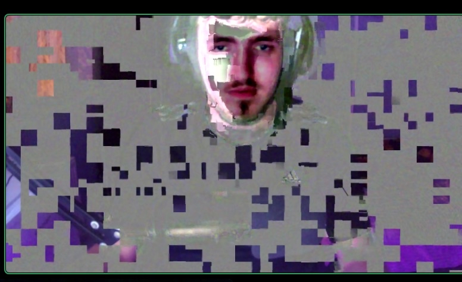

We turn sausage rolls into vehicles of change.

Kody using Sausage Rolls to disintegrate into his pixelated form
Kody leaping from his bed to make fresh sausage rolls
Kody singing his sausage roll theme song
Kody demonstrating strength gained from sausage rolls